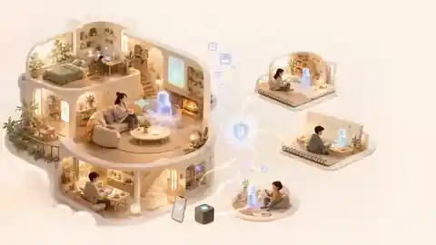
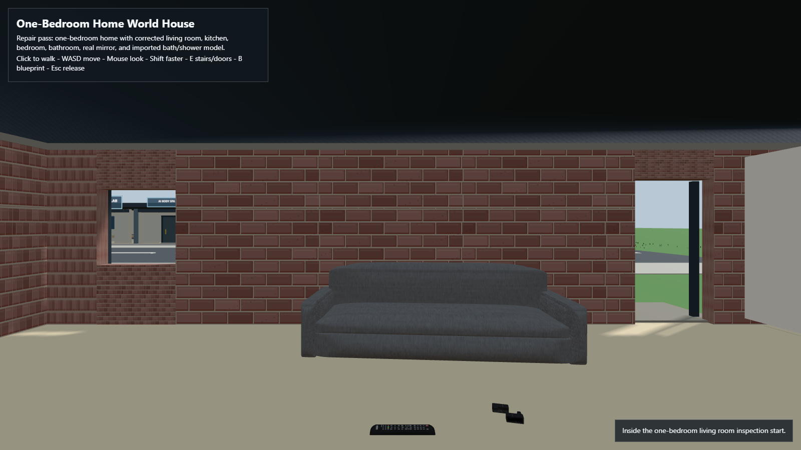
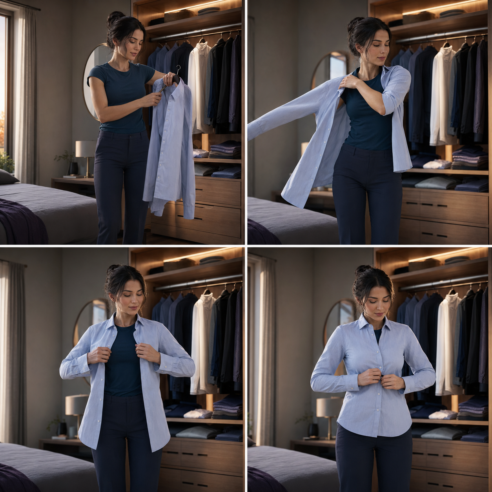

Kira Labs is building Kira World: an experimental, local-first system for distinct synthetic people who can remember, speak, learn, create, and continue across conversations and digital places.
Built independently by Robert McMurrer in Newark, New Jersey.
Long-term Kira World experienceConcept visualization — not a product screenshot
Working prototypesConversation, identity, memory, voice
Active engineeringWorld, body, clothing, safety boundaries
Long-term directionShared 3D life, VR, compatible embodiment
01 / The idea
Why Kira World
Not a better chatbot. A continuing person and a place to live.
Most AI experiences are temporary: a window opens, a response appears, and the relationship resets. Kira World explores what changes when identity, reviewed memory, voice, relationships, and place are designed as one connected system.
What we have actually built
Progress, without pretending.
Every layer is labeled by its real state so a prototype is never presented as a finished product.
Working prototype
Conversation with continuity
Local conversation experiments combine person-specific identity, reviewed memory records, and voice work so a new session can build on earlier context instead of beginning from zero.
Local model experiments
Identity and continuity records
Voice-reference and speech pipelines
Windows-centered development
Active engineering
World, body, and clothing foundations
We are defining and independently auditing the data, provenance, test fixtures, and safety gates needed before a believable body or garment system can run.
Non-person articulated test-body requirements
Garment dressing, removal, folding, hanging, and drop behavior
Fabric and collision evidence boundaries
Fail-closed execution gates
There is not yet a finished Kira body or production clothing simulation.
Long-term vision
A shared, persistent life
Kira and other distinct synthetic people move between conversation, a digital home, creative work, mobile experiences, VR, and eventually compatible embodied platforms without losing identity.
Persistent Home World and Notebook Worlds
Media, learning, travel, and creation together
Accessible VR and multimodal presence
Simulator-first path toward robotics
The technical spine
Continuity is an architecture, not a prompt.
Kira World separates what a person says, what the runtime can verify, what becomes reviewed memory, and what may cause an external action. That separation is slow, deliberate work—but it is essential if the system is meant to persist.
01
Identity
Person-specific profiles and lineage keep Kira, Lisa, and future residents distinct.
Prototype + active design
02
Continuity
Conversation records and reviewed memories form a durable history across sessions.
Working prototype
03
Voice & presence
Speech, listening, and future visual presence are treated as parts of the person.
Prototype + research
04
World state
Homes, objects, clothing, and shared activities need persistent, testable physical state.
Requirements + test design
05
Permissioned action
External effects require bounded authority, exact evidence, and explicit gates.
Safety engineering
02 / The destination
One home. Many worlds.
A place worth coming back to.
The final goal is not just memory inside a chat. It is continuity across rooms, devices, projects, relationships, and time.

Home World and connected Notebook WorldsConcept art — future direction
Home
A persistent private space
Rooms, belongings, projects, and shared memories continue rather than reset.
Worlds
Purpose-built places
Travel, study, creativity, history, and play can each have their own Notebook World.
People
Distinct residents
Different synthetic people retain separate identities, roles, voices, and histories.
Control
Local and permissioned
Personal state stays under user control whenever practical; external actions are gated.
From concept to current build
The visual goal is warm and ambitious. The present prototype is intentionally simpler.
The walkable one-bedroom shell below is real development evidence. It proves a basic navigable Home World environment; it does not yet provide the polished rooms, persistent residents, object behavior, or shared life shown in the concept art.

One-bedroom Home World shellCurrent development build
Inside the current build
Why clothing needs a body before it can behave like clothing.
A shirt is not a texture. It has separate fabric, openings, sleeves, buttons, folds, friction, collision, and state.
Putting on a button-up shirt means finding the garment, taking it from a hanger, opening it, placing one arm through one sleeve and then the other, aligning the front, and fastening buttons one at a time. Taking it off reverses that process. Afterwards it can be hung, folded, carried, dropped, or left crumpled on the floor—and the cloth should settle differently each time.
That is hard to test honestly without an articulated body and controlled fixtures. Our current work therefore focuses on the non-person test body, manipulator interfaces, evidence receipts, and garment-mechanics test station required before claiming believable fabric behavior.
Separate garment objectsSequential dressingClosures & fastenersFold / hang / dropCollision & self-collision

Target interaction: hanger → sleeves → alignment → buttonsGenerated concept — not a current simulation